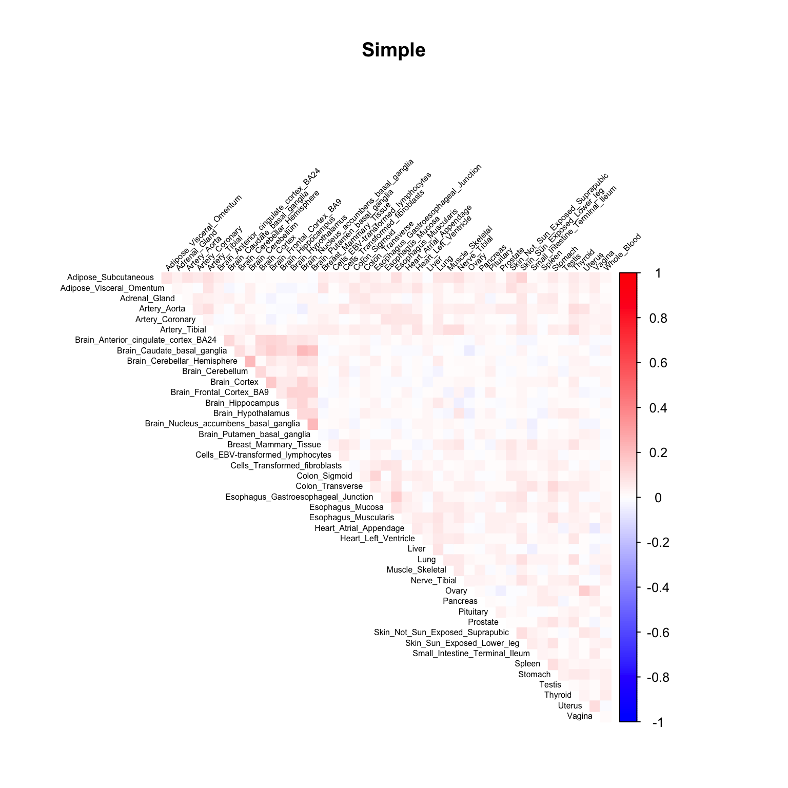
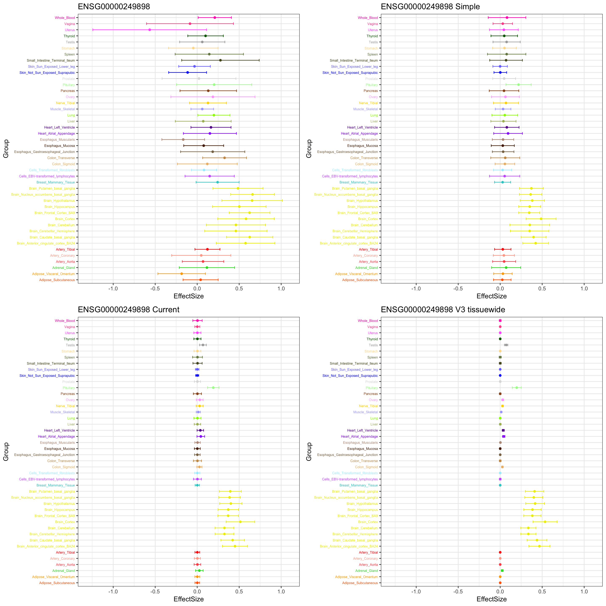
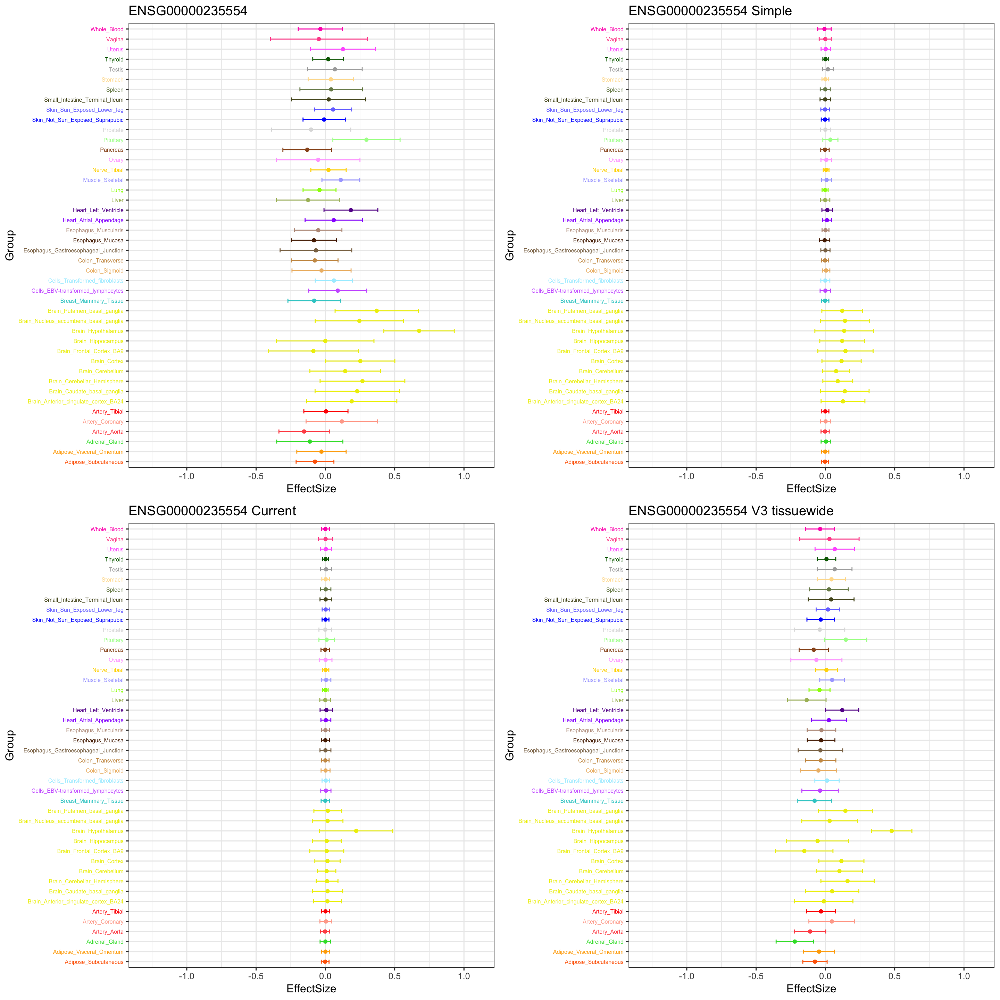
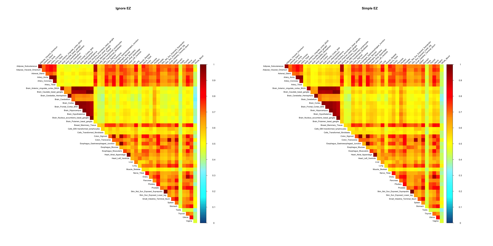
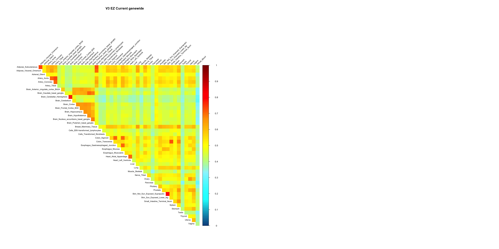

GTEx V6
Yuxin Zou
2018-12-20
Last updated: 2019-01-24
workflowr checks: (Click a bullet for more information)-
✔ R Markdown file: up-to-date
Great! Since the R Markdown file has been committed to the Git repository, you know the exact version of the code that produced these results.
-
✔ Environment: empty
Great job! The global environment was empty. Objects defined in the global environment can affect the analysis in your R Markdown file in unknown ways. For reproduciblity it’s best to always run the code in an empty environment.
-
✔ Seed:
set.seed(20181220)The command
set.seed(20181220)was run prior to running the code in the R Markdown file. Setting a seed ensures that any results that rely on randomness, e.g. subsampling or permutations, are reproducible. -
✔ Session information: recorded
Great job! Recording the operating system, R version, and package versions is critical for reproducibility.
-
Great! You are using Git for version control. Tracking code development and connecting the code version to the results is critical for reproducibility. The version displayed above was the version of the Git repository at the time these results were generated.✔ Repository version: f2a277c
Note that you need to be careful to ensure that all relevant files for the analysis have been committed to Git prior to generating the results (you can usewflow_publishorwflow_git_commit). workflowr only checks the R Markdown file, but you know if there are other scripts or data files that it depends on. Below is the status of the Git repository when the results were generated:
Note that any generated files, e.g. HTML, png, CSS, etc., are not included in this status report because it is ok for generated content to have uncommitted changes.Ignored files: Ignored: .DS_Store Ignored: .Rhistory Ignored: .Rproj.user/ Ignored: data/.DS_Store Ignored: output/.DS_Store Untracked files: Untracked: code/Demo_SumstatQuery.R Untracked: data/cor_tissues_non_ash_voom_pearson.rda Untracked: data/gene_names_GTEX_V6.txt Untracked: data/genewide_ash_out_tissue_mat_halfuniform_non_mode.rda Untracked: data/order_index.rda Untracked: data/samples_id.txt Untracked: data/tissuewide_pearson_halfuniform_tissuewide_non_mode.rda Untracked: output/GTExV6/ Untracked: output/corshrink_noise_gene_1.rds
Expand here to see past versions:
| File | Version | Author | Date | Message |
|---|---|---|---|---|
| html | f2a277c | zouyuxin | 2019-01-24 | Build site. |
| Rmd | bc0e064 | zouyuxin | 2019-01-24 | wflow_publish(“analysis/GTExV6.Rmd”) |
| html | 326208b | zouyuxin | 2019-01-22 | Build site. |
| Rmd | ddb84b2 | zouyuxin | 2019-01-22 | wflow_publish(“analysis/GTExV6.Rmd”) |
| html | a085108 | zouyuxin | 2019-01-10 | Build site. |
| Rmd | 44fe854 | zouyuxin | 2019-01-10 | wflow_publish(“analysis/GTExV6.Rmd”) |
| html | fd41fcc | zouyuxin | 2019-01-05 | Build site. |
| Rmd | edcc929 | zouyuxin | 2019-01-05 | wflow_publish(“analysis/GTExV6.Rmd”) |
| html | 7e2364e | zouyuxin | 2019-01-04 | Build site. |
| Rmd | f39d706 | zouyuxin | 2019-01-04 | wflow_publish(“analysis/GTExV6.Rmd”) |
| html | 6f7677b | zouyuxin | 2019-01-03 | Build site. |
| Rmd | db5756d | zouyuxin | 2019-01-03 | wflow_publish(“analysis/GTExV6.Rmd”) |
| html | 8103f2d | zouyuxin | 2019-01-01 | Build site. |
| Rmd | 3debd8d | zouyuxin | 2019-01-01 | wflow_publish(“analysis/GTExV6.Rmd”) |
| html | 68fcfdd | zouyuxin | 2019-01-01 | Build site. |
| Rmd | 8954469 | zouyuxin | 2019-01-01 | wflow_publish(“analysis/GTExV6.Rmd”) |
| html | f781750 | zouyuxin | 2019-01-01 | Build site. |
| Rmd | 9de28e2 | zouyuxin | 2019-01-01 | wflow_publish(“analysis/GTExV6.Rmd”) |
| html | 5306c8f | zouyuxin | 2019-01-01 | Build site. |
| Rmd | dda4973 | zouyuxin | 2019-01-01 | wflow_publish(“analysis/GTExV6.Rmd”) |
| html | e58574d | zouyuxin | 2019-01-01 | Build site. |
| Rmd | 7a80fc6 | zouyuxin | 2019-01-01 | wflow_publish(“analysis/GTExV6.Rmd”) |
| html | a4437cb | zouyuxin | 2019-01-01 | Build site. |
| Rmd | 26398fd | zouyuxin | 2019-01-01 | wflow_publish(“analysis/GTExV6.Rmd”) |
library(flashr)
library(mixsqp)
library(mashr)Loading required package: ashrlibrary(knitr)
library(kableExtra)
library(ggplot2)
library(gridExtra)gtex <- readRDS(gzcon(url("https://github.com/stephenslab/gtexresults/blob/master/data/MatrixEQTLSumStats.Portable.Z.rds?raw=TRUE")))strong.z = gtex$strong.z
data.strong = mash_set_data(strong.z)
data.random = mash_set_data(gtex$random.b, gtex$random.s)Data Driven Covariances
Flash:
my_init_fn <- function(Y, K = 1) {
ret = flashr:::udv_si(Y, K)
pos_sum = sum(ret$v[ret$v > 0])
neg_sum = -sum(ret$v[ret$v < 0])
if (neg_sum > pos_sum) {
return(list(u = -ret$u, d = ret$d, v = -ret$v))
} else
return(ret)
}
flash_pipeline = function(data, ...) {
## current state-of-the art
## suggested by Jason Willwerscheid
## cf: discussion section of
## https://willwerscheid.github.io/MASHvFLASH/MASHvFLASHnn2.html
ebnm_fn = "ebnm_ash"
ebnm_param = list(l = list(mixcompdist = "normal",
optmethod = "mixSQP"),
f = list(mixcompdist = "+uniform",
optmethod = "mixSQP"))
##
fl_g <- flashr:::flash_greedy_workhorse(data,
var_type = "constant",
ebnm_fn = ebnm_fn,
ebnm_param = ebnm_param,
init_fn = "my_init_fn",
stopping_rule = "factors",
tol = 1e-3,
verbose_output = "odF")
fl_b <- flashr:::flash_backfit_workhorse(data,
f_init = fl_g,
var_type = "constant",
ebnm_fn = ebnm_fn,
ebnm_param = ebnm_param,
stopping_rule = "factors",
tol = 1e-3,
verbose_output = "odF")
return(fl_b)
}
cov_flash = function(data, subset = NULL, non_canonical = FALSE, save_model = NULL) {
if(is.null(subset)) subset = 1:mashr:::n_effects(data)
b.center = apply(data$Bhat, 2, function(x) x - mean(x))
## Only keep factors with at least two values greater than 1 / sqrt(n)
find_nonunique_effects <- function(fl) {
thresh <- 1/sqrt(ncol(fl$fitted_values))
vals_above_avg <- colSums(fl$ldf$f > thresh)
nonuniq_effects <- which(vals_above_avg > 1)
return(fl$ldf$f[, nonuniq_effects, drop = FALSE])
}
fmodel = flash_pipeline(b.center)
if (non_canonical)
flash_f = find_nonunique_effects(fmodel)
else
flash_f = fmodel$ldf$f
## row.names(flash_f) = colnames(b)
if (!is.null(save_model)) saveRDS(list(model=fmodel, factors=flash_f), save_model)
if(ncol(flash_f) == 0){
U.flash = list("tFLASH" = t(fmodel$fitted_values) %*% fmodel$fitted_values / nrow(fmodel$fitted_values))
} else{
U.flash = c(cov_from_factors(t(as.matrix(flash_f)), "FLASH"),
list("tFLASH" = t(fmodel$fitted_values) %*% fmodel$fitted_values / nrow(fmodel$fitted_values)))
}
return(U.flash)
}U.f = cov_flash(data.strong, non_canonical = TRUE, save_model = 'output/GTExV6/flash_model.rds')
saveRDS(U.f, 'output/GTExV6/flash_cov.rds')missing.tissues <- c(7, 8, 19, 20, 24, 25, 31, 34, 37)
gtex.colors <- read.table("https://github.com/stephenslab/gtexresults/blob/master/data/GTExColors.txt?raw=TRUE", sep = '\t', comment.char = '')[-missing.tissues, 2]
gtex.colors <- as.character(gtex.colors)
fl_model = readRDS('output/GTExV6/flash_model.rds')$model
factors = readRDS('output/GTExV6/flash_model.rds')$factors
par(mfrow = c(2, 3))
for(k in 1:16){
barplot(factors[,k], col=gtex.colors, names.arg = FALSE, axes = FALSE, main=paste0("Factor ", k))
}
Expand here to see past versions of flash factors plot-1.png:
| Version | Author | Date |
|---|---|---|
| a4437cb | zouyuxin | 2019-01-01 |

Expand here to see past versions of flash factors plot-2.png:
| Version | Author | Date |
|---|---|---|
| a4437cb | zouyuxin | 2019-01-01 |

Expand here to see past versions of flash factors plot-3.png:
| Version | Author | Date |
|---|---|---|
| a4437cb | zouyuxin | 2019-01-01 |
fll_model = flash_pipeline(fl_model$ldf$l)
saveRDS(fll_model, 'output/GTExV6/flash_loading_model.rds')U.pca = cov_pca(data.strong, 5)U.ed = cov_ed(data.strong, c(U.f, U.pca))U.ed = readRDS('output/GTExV6/Ued.rds')U.c = cov_canonical(data.random)data.strong = mash_set_data(Bhat = gtex$strong.b, Shat = gtex$strong.s)Mash model
m.ignore = mash(data.random, c(U.c, U.ed), outputlevel = 1)
m.ignore$result = mash_compute_posterior_matrices(m.ignore, data.strong)V.simple = estimate_null_correlation_simple(data.random)data.random.V.simple = mash_update_data(data.random, V = V.simple)
m.simple = mash(data.random.V.simple, c(U.c, U.ed), outputlevel = 1)
data.strong.V.simple = mash_update_data(data.strong, V = V.simple)
m.simple$result = mash_compute_posterior_matrices(m.simple, data.strong.V.simple)set.seed(1)
random.subset = sample(1:nrow(gtex$random.b),5000)
data.random.s = mash_set_data(gtex$random.b[random.subset,], gtex$random.s[random.subset,])
current = estimate_null_correlation(data.random.s, c(U.c, U.ed), max_iter = 6)
V.current = current$V
data.random.V.current = mash_update_data(data.random, V = V.current)
m.current = mash(data.random.V.current, c(U.c, U.ed), outputlevel = 1)
data.strong = mash_update_data(data.strong, V = V.current)
m.current$result = mash_compute_posterior_matrices(m.current, data.strong)V = get(load('~/Documents/GitHub/GTEx/data/genewide_ash_out_tissue_mat_halfuniform_non_mode.rda'))
# select tissue
tissue_labels <- read.table(file = "~/Documents/GitHub/GTEx/data/samples_id.txt")[,3]
U <- unique(tissue_labels)
tissues = c(1:6, 9:18, 21:23,26:30,32:33,35:36,38:53)
V = V[tissues,tissues,]
V.strong = V
for(i in 1:nrow(gtex$strong.b)){
V.strong[,,i] = as.matrix(Matrix::nearPD(V[,,i], conv.tol=1.e-05, corr = TRUE, maxit = 200, doSym = TRUE)$mat)
}
saveRDS(V.strong, 'output/GTExV6/V_strong_genewide.rds')
# select genes
gene_names <- as.character(read.table(file = "~/Documents/GitHub/GTEx/data/gene_names_GTEX_V6.txt")[,1])
gene_names_1 <- as.character(sapply(gene_names, function(x) return(strsplit(x, "[.]")[[1]][1])))
data.random.names = rownames(data.random$Bhat)
data.random.names.1 = as.character(sapply(data.random.names, function(x) return(strsplit(x, "[.]")[[1]][1])))
V.random = array(NA, dim = c(44,44,nrow(gtex$random.b)))
for(i in 1:nrow(gtex$random.b)){
numg <- grep(data.random.names.1[i], gene_names_1)
V.random[,,i] = as.matrix(Matrix::nearPD(V[,,numg], conv.tol=1.e-05, corr = TRUE, doSym = TRUE)$mat)
}
saveRDS(V.random, 'output/GTExV6/V_random_genewide.rds')
data.random.V3 = mash_update_data(data.random, V = V.random)
m.V3 = mash(data.random.V3, c(U.c, U.ed), outputlevel = 1, algorithm.version = 'R')
data.strong.V3 = mash_update_data(data.strong, V = V.strong)
m.V3$result = mash_compute_posterior_matrices(m.V3, data.strong.V3, algorithm.version = 'R')V = get(load('~/Documents/GitHub/GTEx/data/tissuewide_pearson_halfuniform_tissuewide_non_mode.rda'))
# select tissue
tissue_labels <- read.table(file = "~/Documents/GitHub/GTEx/data/samples_id.txt")[,3]
U <- unique(tissue_labels)
tissues = c(1:6, 9:18, 21:23,26:30,32:33,35:36,38:53)
V = V[tissues,tissues,]
V.strong = V
for(i in 1:nrow(gtex$strong.b)){
V.strong[,,i] = as.matrix(Matrix::nearPD(V[,,i], conv.tol=1.e-05, corr = TRUE, maxit = 200, doSym = TRUE)$mat)
}
saveRDS(V.strong, '../output/GTExV6/V_strong_tissuewide.rds')
# select genes
gene_names <- as.character(read.table(file = "~/Documents/GitHub/GTEx/data/gene_names_GTEX_V6.txt")[,1])
gene_names_1 <- as.character(sapply(gene_names, function(x) return(strsplit(x, "[.]")[[1]][1])))
data.random.names = rownames(data.random$Bhat)
data.random.names.1 = as.character(sapply(data.random.names, function(x) return(strsplit(x, "[.]")[[1]][1])))
V.random = array(NA, dim = c(44,44,nrow(gtex$random.b)))
for(i in 1:nrow(gtex$random.b)){
numg <- grep(data.random.names.1[i], gene_names_1)
V.random[,,i] = as.matrix(Matrix::nearPD(V[,,numg], conv.tol=1.e-05, corr = TRUE, doSym = TRUE)$mat)
}
saveRDS(V.random, '../output/GTExV6/V_random_tissuewide.rds')
data.random.V3 = mash_update_data(data.random, V = V.random)
m.V3 = mash(data.random.V3, c(U.c, U.ed), outputlevel = 1, algorithm.version = 'R')
data.strong.V3 = mash_update_data(data.strong, V = V.strong)
m.V3$result = mash_compute_posterior_matrices(m.V3, data.strong.V3, algorithm.version = 'R')# read model
m_ignore = readRDS('output/GTExV6/m_ignore_post.rds')
m_ignore_EZ = readRDS('output/GTExV6/m_ignore_EZ_post.rds')
m_simple = readRDS('output/GTExV6/m_simple_post.rds')
m_simple_EZ = readRDS('output/GTExV6/m_simple_EZ_post.rds')
m_current = readRDS('output/GTExV6/m_current_post.rds')
m_current_EZ = readRDS('output/GTExV6/m_current_EZ_post.rds')
m_V3_EZ_tissuewide = readRDS('output/GTExV6/m_V3_tissuewide_EZ.rds')
m_V3_EZ_tissuewide$result = readRDS('output/GTExV6/m_V3_tissuewide_EZ_post_weights.rds')$posterior_matrices
m_V3_EZ_Current_tissuewide = readRDS('output/GTExV6/m_V3_tissuewide_EZ_Current.rds')
m_V3_EZ_Current_tissuewide$result = readRDS('output/GTExV6/m_V3_tissuewide_EZ_Current_post_weights.rds')$posterior_matrices
m_V3_EZ_genewide = readRDS('output/GTExV6/m_V3_genewide_EZ_post.rds')
m_V3_EZ_Current_genewide = readRDS('output/GTExV6/m_V3_genewide_EZ_Current_post.rds')Estimated null cor V
# pdf('../output/GTExV6/Figures/SimpleV.pdf')
corrplot::corrplot(V.simple, method='color', type='upper', tl.col="black", tl.srt=45, tl.cex = 0.5, diag = FALSE, col=colorRampPalette(c("blue", "white", "red"))(200), cl.lim = c(-1,1), title = 'Simple', mar=c(0,0,5,0))
Expand here to see past versions of V-1.png:
| Version | Author | Date |
|---|---|---|
| 5306c8f | zouyuxin | 2019-01-01 |
| a4437cb | zouyuxin | 2019-01-01 |
# dev.off()
V.current = readRDS('output/GTExV6/currentV_EZ.rds')
V.current = V.current$V
# pdf('../output/GTExV6/Figures/CurrentEZV.pdf')
corrplot::corrplot(V.current, method='color', type='upper', tl.col="black", tl.srt=45, tl.cex = 0.5, diag = FALSE, col=colorRampPalette(c("blue", "white", "red"))(200), cl.lim = c(-1,1), title = 'Current EZ', mar=c(0,0,5,0))Expand here to see past versions of V-2.png:
| Version | Author | Date |
|---|---|---|
| 5306c8f | zouyuxin | 2019-01-01 |
# dev.off()Results
logliks = c(get_loglik(m_ignore), get_loglik(m_simple), get_loglik(m_current))
logliks_EZ = c(get_loglik(m_ignore_EZ), get_loglik(m_simple_EZ), get_loglik(m_current_EZ))
tmp = cbind(logliks, logliks_EZ)
tmp = rbind(tmp, c(NA, get_loglik(m_V3_EZ_tissuewide)))
tmp = rbind(tmp, c(NA, get_loglik(m_V3_EZ_Current_tissuewide)))
tmp = rbind(tmp, c(NA, get_loglik(m_V3_EZ_genewide)))
tmp = rbind(tmp, c(NA, get_loglik(m_V3_EZ_Current_genewide)))
row.names(tmp) = c('Ignore', 'Simple', 'Current', 'V3 tissuewide', 'V3 Current tissuewide', 'V3 genewide', 'V3 Current genewide')
colnames(tmp) = c('EE', 'EZ')
tmp %>% kable() %>% kable_styling()| EE | EZ | |
|---|---|---|
| Ignore | 929188.2 | 935288.4 |
| Simple | 933359.2 | 936783.2 |
| Current | 937323.7 | 939685.2 |
| V3 tissuewide | NA | 904883.8 |
| V3 Current tissuewide | NA | 907334.3 |
| V3 genewide | NA | 897029.6 |
| V3 Current genewide | NA | 898310.2 |
par(mfrow=c(1,2))
barplot(get_estimated_pi(m_ignore), las=2, cex.names = 0.7, main = 'Ignore EE')
barplot(get_estimated_pi(m_simple), las=2, cex.names = 0.7, main = 'Simple EE')
Expand here to see past versions of plot weights-1.png:
| Version | Author | Date |
|---|---|---|
| f781750 | zouyuxin | 2019-01-01 |
| 5306c8f | zouyuxin | 2019-01-01 |
| a4437cb | zouyuxin | 2019-01-01 |
barplot(get_estimated_pi(m_current), las=2, cex.names = 0.7, main = 'Current EE')
barplot(get_estimated_pi(m_ignore_EZ), las=2, cex.names = 0.7, main = 'Ignore EZ')
Expand here to see past versions of plot weights-2.png:
| Version | Author | Date |
|---|---|---|
| f2a277c | zouyuxin | 2019-01-24 |
| 326208b | zouyuxin | 2019-01-22 |
| f781750 | zouyuxin | 2019-01-01 |
| 5306c8f | zouyuxin | 2019-01-01 |
| a4437cb | zouyuxin | 2019-01-01 |
barplot(get_estimated_pi(m_simple_EZ), las=2, cex.names = 0.7, main = 'Simple EZ')
barplot(get_estimated_pi(m_current_EZ), las=2, cex.names = 0.7, main = 'Current EZ')
Expand here to see past versions of plot weights-3.png:
| Version | Author | Date |
|---|---|---|
| f2a277c | zouyuxin | 2019-01-24 |
| f781750 | zouyuxin | 2019-01-01 |
| 5306c8f | zouyuxin | 2019-01-01 |
| a4437cb | zouyuxin | 2019-01-01 |
par(mfrow=c(1,2))
barplot(get_estimated_pi(m_V3_EZ_tissuewide), las=2, cex.names = 0.7, main = 'V3 tissuewide EZ')
barplot(get_estimated_pi(m_V3_EZ_Current_tissuewide), las=2, cex.names = 0.7, main = 'V3 Current tissueide EZ')
Expand here to see past versions of plot V3 weights-1.png:
| Version | Author | Date |
|---|---|---|
| f2a277c | zouyuxin | 2019-01-24 |
barplot(get_estimated_pi(m_V3_EZ_genewide), las=2, cex.names = 0.7, main = 'V3 genewide EZ')
barplot(get_estimated_pi(m_V3_EZ_Current_genewide), las=2, cex.names = 0.7, main = 'V3 Current geneide EZ')
Expand here to see past versions of plot V3 weights-2.png:
| Version | Author | Date |
|---|---|---|
| f2a277c | zouyuxin | 2019-01-24 |
Number of significant:
numsig_EE = c(length(get_significant_results(m_ignore)),
length(get_significant_results(m_simple)),
length(get_significant_results(m_current)))
numsig_EZ = c(length(get_significant_results(m_ignore_EZ)),
length(get_significant_results(m_simple_EZ)),
length(get_significant_results(m_current_EZ)))
tmp = cbind(numsig_EE, numsig_EZ)
tmp = rbind(tmp, c(NA, length(get_significant_results(m_V3_EZ_tissuewide))))
tmp = rbind(tmp, c(NA, length(get_significant_results(m_V3_EZ_Current_tissuewide))))
tmp = rbind(tmp, c(NA, length(get_significant_results(m_V3_EZ_genewide))))
tmp = rbind(tmp, c(NA, length(get_significant_results(m_V3_EZ_Current_genewide))))
row.names(tmp) = c('Ignore', 'Simple', 'Current', 'V3 tissuewide', 'V3 Current tissuewide', 'V3 genewide', 'V3 Current genewide')
colnames(tmp) = c('EE', 'EZ')
tmp %>% kable() %>% kable_styling()| EE | EZ | |
|---|---|---|
| Ignore | 14017 | 14221 |
| Simple | 13037 | 13485 |
| Current | 12803 | 13006 |
| V3 tissuewide | NA | 16066 |
| V3 Current tissuewide | NA | 16067 |
| V3 genewide | NA | 16069 |
| V3 Current genewide | NA | 16069 |
The gene significant in simple EZ, not in current EZ:
stronggene = data.frame(gtex$strong.b[5034,])
colnames(stronggene) = 'EffectSize'
stronggene$Group = row.names(stronggene)
stronggene$se = gtex$strong.s[5034,]
p1 = ggplot(stronggene, aes(y = EffectSize, x = Group)) +
geom_point(show.legend = FALSE, color=gtex.colors) + coord_flip() + ggtitle('ENSG00000135315') + ylim(c(-0.7,1)) + geom_errorbar(aes(ymin=EffectSize-1.96*se, ymax=EffectSize+1.96*se), width=0.4, show.legend = FALSE, color=gtex.colors) +
theme_bw(base_size=12) + theme(axis.text.y = element_text(colour = gtex.colors, size = 6))
stronggeneSimple = data.frame(m_simple_EZ$result$PosteriorMean[5034,])
colnames(stronggeneSimple) = 'EffectSize'
stronggeneSimple$Group = row.names(stronggeneSimple)
stronggeneSimple$se = m_simple_EZ$result$PosteriorSD[5034,]
p2 = ggplot(stronggeneSimple, aes(y = EffectSize, x = Group)) +
geom_point(show.legend = FALSE, color=gtex.colors) + coord_flip() + ggtitle('ENSG00000135315 Simple') + ylim(c(-0.7,1)) +
geom_errorbar(aes(ymin=EffectSize-1.96*se, ymax=EffectSize+1.96*se), width=0.4, show.legend = FALSE, color=gtex.colors) +
theme_bw(base_size=12) + theme(axis.text.y = element_text(colour = gtex.colors, size = 6))
stronggeneCurrent = data.frame(m_current_EZ$result$PosteriorMean[5034,])
colnames(stronggeneCurrent) = 'EffectSize'
stronggeneCurrent$Group = row.names(stronggeneCurrent)
stronggeneCurrent$se = m_current_EZ$result$PosteriorSD[5034,]
p3 = ggplot(stronggeneCurrent, aes(y = EffectSize, x = Group)) +
geom_point(show.legend = FALSE, color=gtex.colors) + ylim(c(-0.7,1)) + coord_flip() + ggtitle('ENSG00000135315 Current') +
geom_errorbar(aes(ymin=EffectSize-1.96*se, ymax=EffectSize+1.96*se), width=0.4, show.legend = FALSE, color=gtex.colors) +
theme_bw(base_size=12) + theme(axis.text.y = element_text(colour = gtex.colors, size = 6))
stronggeneV3 = data.frame(m_V3_EZ_Current_tissuewide$result$PosteriorMean[5034,])
colnames(stronggeneV3) = 'EffectSize'
stronggeneV3$Group = row.names(stronggeneV3)
stronggeneV3$se = m_V3_EZ_Current_tissuewide$result$PosteriorSD[5034,]
p4 = ggplot(stronggeneV3, aes(y = EffectSize, x = Group)) +
geom_point(show.legend = FALSE, color=gtex.colors) + ylim(c(-0.7,1)) + coord_flip() + ggtitle('ENSG00000135315 V3 Current tissuewide') +
geom_errorbar(aes(ymin=EffectSize-1.96*se, ymax=EffectSize+1.96*se), width=0.4, show.legend = FALSE, color=gtex.colors) +
theme_bw(base_size=12) + theme(axis.text.y = element_text(colour = gtex.colors, size = 6))
grid.arrange(p1, p2, p3, p4, nrow = 2)Expand here to see past versions of unnamed-chunk-13-1.png:
| Version | Author | Date |
|---|---|---|
| 326208b | zouyuxin | 2019-01-22 |
The gene MCPH1:
stronggene = data.frame(gtex$strong.b[13837,])
colnames(stronggene) = 'EffectSize'
stronggene$Group = row.names(stronggene)
stronggene$se = gtex$strong.s[13837,]
p1 = ggplot(stronggene, aes(y = EffectSize, x = Group)) +
geom_point(show.legend = FALSE, color=gtex.colors) + coord_flip() + ggtitle('ENSG00000249898') + ylim(c(-1.3,1.1)) + geom_errorbar(aes(ymin=EffectSize-1.96*se, ymax=EffectSize+1.96*se), width=0.4, show.legend = FALSE, color=gtex.colors) +
theme_bw(base_size=12) + theme(axis.text.y = element_text(colour = gtex.colors, size = 6))
stronggeneSimple = data.frame(m_simple_EZ$result$PosteriorMean[13837,])
colnames(stronggeneSimple) = 'EffectSize'
stronggeneSimple$Group = row.names(stronggeneSimple)
stronggeneSimple$se = m_simple_EZ$result$PosteriorSD[13837,]
p2 = ggplot(stronggeneSimple, aes(y = EffectSize, x = Group)) +
geom_point(show.legend = FALSE, color=gtex.colors) + ylim(c(-1.3,1.1)) + coord_flip() + ggtitle('ENSG00000249898 Simple') +
geom_errorbar(aes(ymin=EffectSize-1.96*se, ymax=EffectSize+1.96*se), width=0.4, show.legend = FALSE, color=gtex.colors) +
theme_bw(base_size=12) + theme(axis.text.y = element_text(colour = gtex.colors, size = 6))
stronggeneCurrent = data.frame(m_current_EZ$result$PosteriorMean[13837,])
colnames(stronggeneCurrent) = 'EffectSize'
stronggeneCurrent$Group = row.names(stronggeneCurrent)
stronggeneCurrent$se = m_current_EZ$result$PosteriorSD[13837,]
p3 = ggplot(stronggeneCurrent, aes(y = EffectSize, x = Group)) +
geom_point(show.legend = FALSE, color=gtex.colors) + coord_flip() + ggtitle('ENSG00000249898 Current') + ylim(c(-1.3,1.1)) +
geom_errorbar(aes(ymin=EffectSize-1.96*se, ymax=EffectSize+1.96*se), width=0.4, show.legend = FALSE, color=gtex.colors) +
theme_bw(base_size=12) + theme(axis.text.y = element_text(colour = gtex.colors, size = 6))
stronggeneV3 = data.frame(m_V3_EZ_tissuewide$result$PosteriorMean[13837,])
colnames(stronggeneV3) = 'EffectSize'
stronggeneV3$Group = row.names(stronggeneV3)
stronggeneV3$se = m_V3_EZ_tissuewide$result$PosteriorSD[13837,]
p4 = ggplot(stronggeneV3, aes(y = EffectSize, x = Group)) +
geom_point(show.legend = FALSE, color=gtex.colors) + ylim(c(-1.3,1.1)) + coord_flip() + ggtitle('ENSG00000249898 V3 tissuewide') +
geom_errorbar(aes(ymin=EffectSize-1.96*se, ymax=EffectSize+1.96*se), width=0.4, show.legend = FALSE, color=gtex.colors) +
theme_bw(base_size=12) + theme(axis.text.y = element_text(colour = gtex.colors, size = 6))
grid.arrange(p1, p2, p3, p4, nrow = 2)
Expand here to see past versions of unnamed-chunk-14-1.png:
| Version | Author | Date |
|---|---|---|
| f2a277c | zouyuxin | 2019-01-24 |
| 326208b | zouyuxin | 2019-01-22 |
| a085108 | zouyuxin | 2019-01-10 |
The gene significant in V3 EZ tissuewide, not in current EZ:
ind = setdiff(get_significant_results(m_V3_EZ_tissuewide), get_significant_results(m_current_EZ))[10]
stronggene = data.frame(gtex$strong.b[ind,])
colnames(stronggene) = 'EffectSize'
stronggene$Group = row.names(stronggene)
stronggene$se = gtex$strong.s[ind,]
p1 = ggplot(stronggene, aes(y = EffectSize, x = Group)) +
geom_point(show.legend = FALSE, color=gtex.colors) + coord_flip() + ggtitle('ENSG00000235554') + ylim(c(-1.3,1.1)) + geom_errorbar(aes(ymin=EffectSize-1.96*se, ymax=EffectSize+1.96*se), width=0.4, show.legend = FALSE, color=gtex.colors) +
theme_bw(base_size=12) + theme(axis.text.y = element_text(colour = gtex.colors, size = 6))
stronggeneSimple = data.frame(m_simple_EZ$result$PosteriorMean[ind,])
colnames(stronggeneSimple) = 'EffectSize'
stronggeneSimple$Group = row.names(stronggeneSimple)
stronggeneSimple$se = m_simple_EZ$result$PosteriorSD[ind,]
p2 = ggplot(stronggeneSimple, aes(y = EffectSize, x = Group)) +
geom_point(show.legend = FALSE, color=gtex.colors) + ylim(c(-1.3,1.1)) + coord_flip() + ggtitle('ENSG00000235554 Simple') +
geom_errorbar(aes(ymin=EffectSize-1.96*se, ymax=EffectSize+1.96*se), width=0.4, show.legend = FALSE, color=gtex.colors) +
theme_bw(base_size=12) + theme(axis.text.y = element_text(colour = gtex.colors, size = 6))
stronggeneCurrent = data.frame(m_current_EZ$result$PosteriorMean[ind,])
colnames(stronggeneCurrent) = 'EffectSize'
stronggeneCurrent$Group = row.names(stronggeneCurrent)
stronggeneCurrent$se = m_current_EZ$result$PosteriorSD[ind,]
p3 = ggplot(stronggeneCurrent, aes(y = EffectSize, x = Group)) +
geom_point(show.legend = FALSE, color=gtex.colors) + coord_flip() + ggtitle('ENSG00000235554 Current') + ylim(c(-1.3,1.1)) +
geom_errorbar(aes(ymin=EffectSize-1.96*se, ymax=EffectSize+1.96*se), width=0.4, show.legend = FALSE, color=gtex.colors) +
theme_bw(base_size=12) + theme(axis.text.y = element_text(colour = gtex.colors, size = 6))
stronggeneV3 = data.frame(m_V3_EZ_tissuewide$result$PosteriorMean[ind,])
colnames(stronggeneV3) = 'EffectSize'
stronggeneV3$Group = row.names(stronggeneV3)
stronggeneV3$se = m_V3_EZ_tissuewide$result$PosteriorSD[ind,]
p4 = ggplot(stronggeneV3, aes(y = EffectSize, x = Group)) +
geom_point(show.legend = FALSE, color=gtex.colors) + ylim(c(-1.3,1.1)) + coord_flip() + ggtitle('ENSG00000235554 V3 tissuewide') +
geom_errorbar(aes(ymin=EffectSize-1.96*se, ymax=EffectSize+1.96*se), width=0.4, show.legend = FALSE, color=gtex.colors) +
theme_bw(base_size=12) + theme(axis.text.y = element_text(colour = gtex.colors, size = 6))
grid.arrange(p1, p2, p3, p4, nrow = 2)
Expand here to see past versions of unnamed-chunk-15-1.png:
| Version | Author | Date |
|---|---|---|
| f2a277c | zouyuxin | 2019-01-24 |
| 326208b | zouyuxin | 2019-01-22 |
| a085108 | zouyuxin | 2019-01-10 |
| 5306c8f | zouyuxin | 2019-01-01 |
| a4437cb | zouyuxin | 2019-01-01 |
The pairwise sharing by magnitude
par(mfrow = c(1,2))
x <- get_pairwise_sharing(m_ignore_EZ)
colnames(x) <- colnames(get_lfsr(m_ignore_EZ))
rownames(x) <- colnames(x)
clrs=colorRampPalette(rev(c('darkred', 'red','orange','yellow','cadetblue1', 'cyan', 'dodgerblue4', 'blue','darkorchid1','lightgreen','green', 'forestgreen','darkolivegreen')))(200)
corrplot::corrplot(x, method='color', type='upper', tl.col="black", tl.srt=45, tl.cex = 0.7, diag = FALSE, col=clrs, cl.lim = c(0,1), title = 'Ignore EZ', mar=c(0,0,5,0))
x <- get_pairwise_sharing(m_simple_EZ)
colnames(x) <- colnames(get_lfsr(m_simple_EZ))
rownames(x) <- colnames(x)
corrplot::corrplot(x, method='color', type='upper', tl.col="black", tl.srt=45, tl.cex = 0.7, diag = FALSE, col=clrs, cl.lim = c(0,1), title = 'Simple EZ', mar=c(0,0,5,0))
Expand here to see past versions of unnamed-chunk-16-1.png:
| Version | Author | Date |
|---|---|---|
| 326208b | zouyuxin | 2019-01-22 |
| a085108 | zouyuxin | 2019-01-10 |
| 6f7677b | zouyuxin | 2019-01-03 |
| 8103f2d | zouyuxin | 2019-01-01 |
| 5306c8f | zouyuxin | 2019-01-01 |
| a4437cb | zouyuxin | 2019-01-01 |
par(mfrow=c(1,2))
x <- get_pairwise_sharing(m_current_EZ)
colnames(x) <- colnames(get_lfsr(m_current_EZ))
rownames(x) <- colnames(x)
corrplot::corrplot(x, method='color', type='upper', tl.col="black", tl.srt=45, tl.cex = 0.7, diag = FALSE, col=clrs, cl.lim = c(0,1), title = 'Current EZ', mar=c(0,0,5,0))
x <- get_pairwise_sharing(m_V3_EZ_tissuewide)
colnames(x) <- colnames(get_lfsr(m_V3_EZ_tissuewide))
rownames(x) <- colnames(x)
corrplot::corrplot(x, method='color', type='upper', tl.col="black", tl.srt=45, tl.cex = 0.7, diag = FALSE, col=clrs, cl.lim = c(0,1), title = 'V3 EZ genewide', mar=c(0,0,5,0))Expand here to see past versions of unnamed-chunk-17-1.png:
| Version | Author | Date |
|---|---|---|
| f2a277c | zouyuxin | 2019-01-24 |
| 326208b | zouyuxin | 2019-01-22 |
| a085108 | zouyuxin | 2019-01-10 |
| 7e2364e | zouyuxin | 2019-01-04 |
| 6f7677b | zouyuxin | 2019-01-03 |
| 68fcfdd | zouyuxin | 2019-01-01 |
| 5306c8f | zouyuxin | 2019-01-01 |
| a4437cb | zouyuxin | 2019-01-01 |
x <- get_pairwise_sharing(m_V3_EZ_genewide)
colnames(x) <- colnames(get_lfsr(m_V3_EZ_genewide))
rownames(x) <- colnames(x)
corrplot::corrplot(x, method='color', type='upper', tl.col="black", tl.srt=45, tl.cex = 0.7, diag = FALSE, col=clrs, cl.lim = c(0,1), title = 'V3 EZ Current genewide', mar=c(0,0,5,0))
Session information
sessionInfo()R version 3.5.1 (2018-07-02)
Platform: x86_64-apple-darwin15.6.0 (64-bit)
Running under: macOS 10.14.2
Matrix products: default
BLAS: /Library/Frameworks/R.framework/Versions/3.5/Resources/lib/libRblas.0.dylib
LAPACK: /Library/Frameworks/R.framework/Versions/3.5/Resources/lib/libRlapack.dylib
locale:
[1] en_US.UTF-8/en_US.UTF-8/en_US.UTF-8/C/en_US.UTF-8/en_US.UTF-8
attached base packages:
[1] stats graphics grDevices utils datasets methods base
other attached packages:
[1] gridExtra_2.3 ggplot2_3.1.0 kableExtra_1.0.1 knitr_1.20
[5] mashr_0.2.19.0555 ashr_2.2-26 mixsqp_0.1-93 flashr_0.6-3
loaded via a namespace (and not attached):
[1] Rcpp_1.0.0 mvtnorm_1.0-8 lattice_0.20-38
[4] assertthat_0.2.0 rprojroot_1.3-2 digest_0.6.18
[7] foreach_1.4.4 truncnorm_1.0-8 R6_2.3.0
[10] plyr_1.8.4 backports_1.1.3 evaluate_0.12
[13] httr_1.4.0 highr_0.7 pillar_1.3.1
[16] rlang_0.3.1 lazyeval_0.2.1 pscl_1.5.2
[19] rstudioapi_0.9.0 whisker_0.3-2 R.utils_2.7.0
[22] R.oo_1.22.0 Matrix_1.2-15 rmarkdown_1.11
[25] labeling_0.3 webshot_0.5.1 readr_1.3.1
[28] stringr_1.3.1 munsell_0.5.0 compiler_3.5.1
[31] pkgconfig_2.0.2 SQUAREM_2017.10-1 htmltools_0.3.6
[34] tidyselect_0.2.5 tibble_2.0.1 workflowr_1.1.1
[37] codetools_0.2-16 viridisLite_0.3.0 crayon_1.3.4
[40] dplyr_0.7.8 withr_2.1.2 MASS_7.3-51.1
[43] R.methodsS3_1.7.1 grid_3.5.1 gtable_0.2.0
[46] git2r_0.24.0 magrittr_1.5 scales_1.0.0
[49] stringi_1.2.4 reshape2_1.4.3 doParallel_1.0.14
[52] bindrcpp_0.2.2 xml2_1.2.0 rmeta_3.0
[55] iterators_1.0.10 tools_3.5.1 glue_1.3.0
[58] softImpute_1.4 purrr_0.2.5 hms_0.4.2
[61] abind_1.4-5 parallel_3.5.1 yaml_2.2.0
[64] colorspace_1.4-0 rvest_0.3.2 corrplot_0.84
[67] bindr_0.1.1 This reproducible R Markdown analysis was created with workflowr 1.1.1